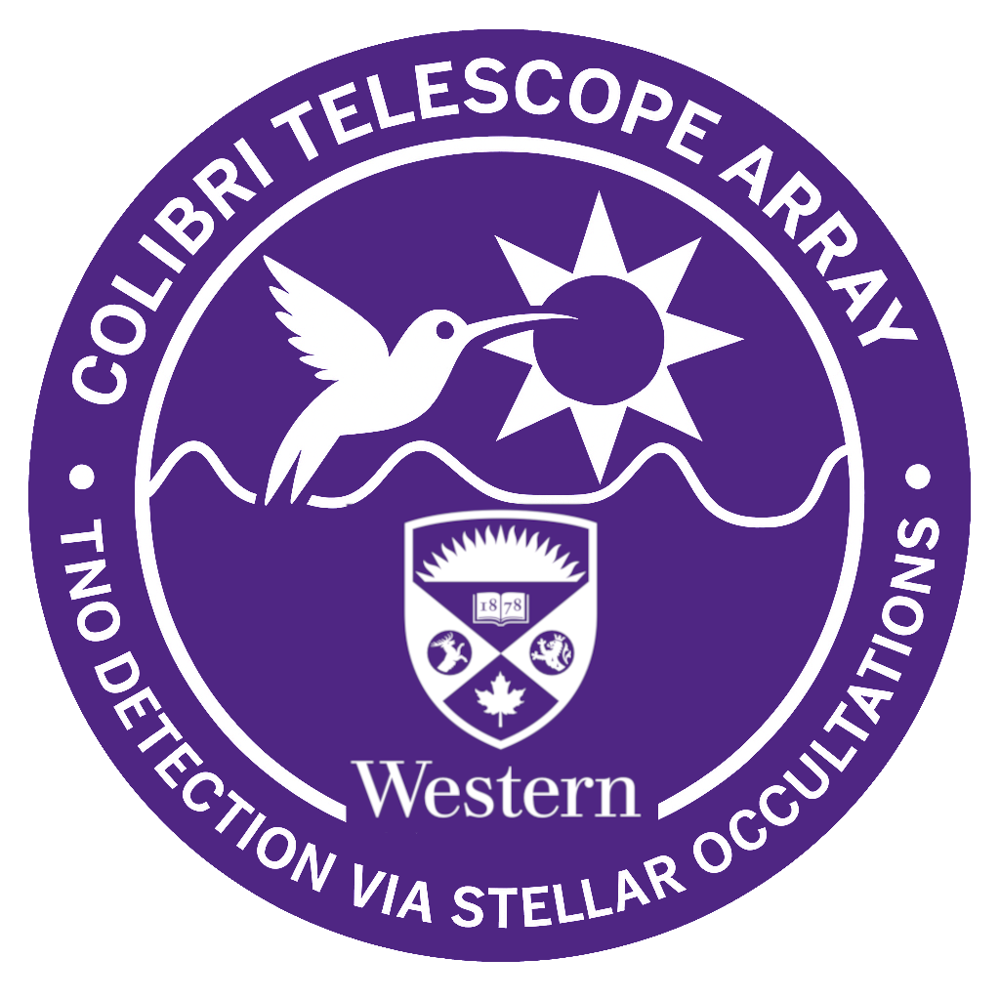

Homepage
About COLIBRI
Student Projects
Technical Documentation
FAQs
Contact Directory
About COLIBRI ▼
Elginfield Observatory
Colibri Telescope Array
Student Projects ▼
Toni Almeida – PhD Candidate (Technical Specialist)
Anthony Girmenia – MSc Student (Software Specialist)
Noel Wajunblum – BSc Co-op Student (POET)
Student Projects ▼
Toni Almeida – PhD Candidate (Technical Specialist)
Anthony Girmenia – MSc Student (Software Specialist)
Noel Wajunblum – BSc Co-op Student (POET)
s

About Colibri ▼
Elginfield Observatory
Colibri Telescope Array
Student Projects ▼
Toni Almeida - PhD Candidate (techninical specialist)
Anthony Girmenia - MSc student (software specialist)
Noel Wajunblum - BSc co-op student (POET)